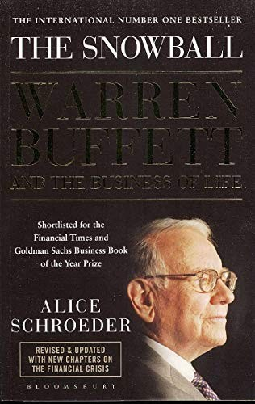

艾丽丝·施罗德（Alice Schroeder）原本不是作家，而是华尔街的保险业分析师。她1980年拿到德克萨斯大学奥斯汀分校麦库姆斯商学院的MBA，先在安永做了十一年会计师，后转入财务会计准则委员会处理保险会计问题，1998年在Paine Webber做分析师期间，因研究伯克希尔收购通用再保险（General Re）一事写信给巴菲特要求见面，写出了华尔街第一份深度覆盖伯克希尔哈撒韦的研究报告。这份报告让巴菲特印象深刻，此后多年她成了他愿意深入交谈的少数卖方分析师之一。2000年她跳槽到摩根士丹利，连续七年入选《机构投资者》全美最佳分析师榜单，并在2001、2002年两度名列财产险类别第一。2003年6月，巴菲特主动邀请她做自己的官方传记作者，她辞去摩根士丹利的职务，搬到奥马哈，此后五年里投入约两千小时采访巴菲特本人，外加他的家人、朋友、生意伙伴等250余人。巴菲特给她的唯一条件是：不会要求看稿、不会要求修改，遇到说法有出入的地方，一律采用"对他不那么讨好的那个版本"。
全书976页，2008年9月由Bantam Books出版，书名"滚雪球"取自巴菲特本人的一个比喻——他告诉施罗德，人生就像滚雪球，重要的是找到湿的雪和一条足够长的坡道；他说这不只是指金钱的复利，也指理解世界、结交什么样的朋友，你自己得先成为那片能粘住雪的雪，也得成为自己的湿雪。书中细致铺陈了巴菲特在奥马哈的童年：祖上是当地几代经营杂货店的家族，父亲霍华德（Howard Buffett）在1929年大崩盘前不久才转行做股票经纪人；施罗德也写到母亲莉拉（Leila）对巴菲特和姐姐多丽丝长期的言语虐待——骂他们"没用、忘恩负义、自私"——巴菲特承认这段经历给自己留下了情感创伤。书中还详述了本杰明·格雷厄姆（Benjamin Graham）在哥伦比亚大学如何塑造了他的投资框架、第一任妻子苏珊·汤普森·巴菲特（Susan Thompson Buffett，1932—2004）与他长期分居却始终维系的婚姻、以及GEICO、喜诗糖果、可口可乐等具体投资案例的来龙去脉。与此前多部巴菲特传记相比，这本书的独特之处在于施罗德掌握的私人档案与巴菲特本人的坦白程度——他把自己的不安全感、与家人的紧张关系都摆在台面上，而不是止步于投资策略的复盘。
这本书在出版当年拿到了多项认可：《华盛顿邮报》《金融时报》《商业周刊》《出版人周刊》都将其评为2008年度最佳图书之一，亚马逊评为当年最佳商业与投资类图书，入围2008年《金融时报》与高盛年度商业图书奖，也是2009年杰拉尔德·勒布奖（Gerald Loeb Award）的入围作品，2008年10月19日至11月9日连续多周登上《纽约时报》非虚构类畅销榜首位。《华盛顿邮报》的评语是："这或许是我们能得到的、对巴菲特和他的世界最详尽的一瞥……一部资本家的圣经"（the most detailed glimpse inside Warren Buffett and his world that we likely will ever get...a bible for capitalists）。中文简体版由覃扬眉等人翻译，中信出版社出版，分上下两册。
对关心巴菲特投资方法之外的人，这本书提供的是另一种材料：它讲的不是他怎么选股，而是复利这个概念如何延伸到他整个人生的经营方式。施罗德记录到，巴菲特在两千小时的访谈里第一次系统回顾了自己的童年创伤、婚姻里的空缺，以及他与埃斯特丽·门克斯（Astrid Menks）多年同居后才正式结婚的过程，这些细节此前从未被他本人公开谈论过。想理解"长期主义"具体是什么样的生活，而非一句口号，这本书给出的是巴菲特本人愿意展示的、最不加修饰的样本。